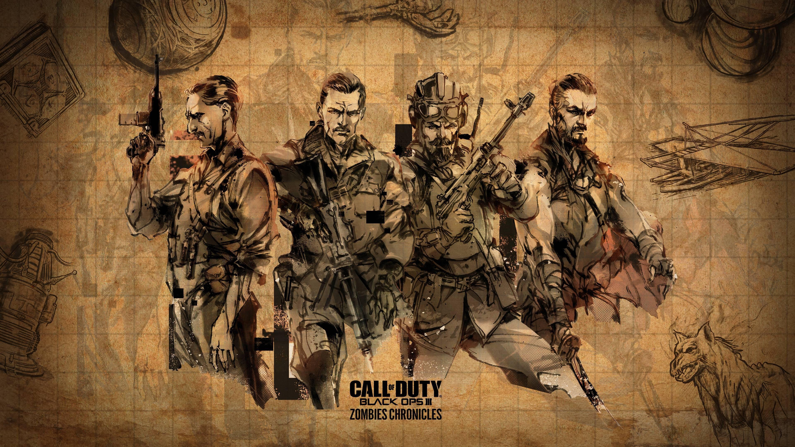

The Aether story is based on four main characters.The first is Edward Richtofen, in the begining he is the leader of the group and the one who worked with the nazis to harness the element 115 before he defected and attempted to remove zombies from his universe by any means. The second is Takeo Masaki before he was part of the group he was apart of the Japanes Empire. The third is Nikolai Belinski, Nikolai was part of the soviet union and eventually became the real leader of the group as Richtofens goals became more based on his own survival then the survival of the universe. The fourth and final memeber is Tank Dempsey, Tank is a U.S marine he followed the group but never trusted Richtofen so once Nikolai took over he followed him without a second thought.

The story begins with the nazis that had made an excavation site, as they dug into the ground they broke a seal while looking for the element 115 (a rare element that could turn the tide of the war for either side).The seal was broken and it unleased masses of the undead that forced the war into a free for all, forcing the group to come together and fight. At the end of origins they transport the brain of maxis (the teacher/father figure of Richtofen) sending it on a drone to a new demention known as Agathar in were a gardian had made a utopia for him and the rest of the universe. Once they had completed there tasks in origins they moved to another site first splitting up as Takeo, Nikolai and Dempsey go back in time where an older verion of Ricktofen has betrade a old verion of Macsis than asking this older verion of Ricktofen to not open a telepoter that he used to batray Macsis. The older Ricktofen ignores them and opens the telepoter and finds the new Ricktofen that ends up killing the older verion of himself. The group annoyed and confused on why he killed the older verions of himself, he explains that they will need to find all of the older versions of themselfs and kill them to collect their souls to put in a relic (built by the gardian) so they can live through the apocalpes in a younger body unscathed by the horrors they had done in the past. Once they had escaped from where the old Ricktofen was killed they headed to Russia to kill the older version of Nikolai then moving from team member to team member the last being Dempsey once they achived that goal Ricktofen got a hold of a blood sample known as the guarantee, keeping a hold of it untill just before they go to meet the guardian, the group drink the blood and then go to meet the guardian. Once they walked through the telepoter they are brought to Agather and is welcomed by Macsis, Ricktofen hugs macsis as its been a long time since he saw his mentor. He puts the relic on the table, as he thought it would be safe. He went to meet the guardian and as they talked Macsis could hear a dark voice coming from the relic, he grabs the relic and becomes the corrupted version of the guardian. Ricktofen and his group fight the corrupted guardian and wins but in the process kills Macsis. Once that has happend the guardian attemps to erase the group from time but because of the blood he is unsuccessful. The guardian, frustrated that he was unsuccessful brings them back in time to where they take part in a huge war and are able to build magical starves, because of that power there is a temple built in all four of their names. That temple is the same place as the excavation site where Origins took place, making aloop in time.
if you would like to watch the origins easter egg and how to get the story click here
And if you would like to see the end easter egg and how to do it click here